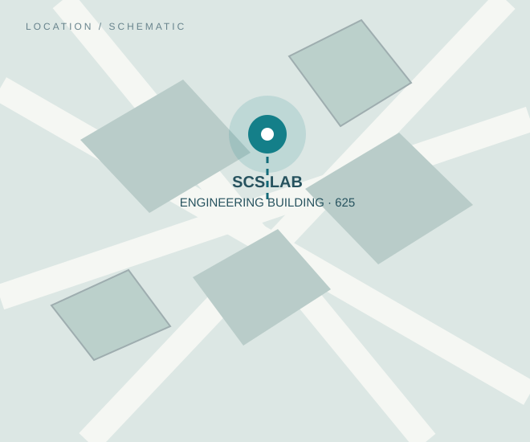

SCS LAB / 06GET IN TOUCH
Contact.
구조공학 공동연구, 학부연구생·대학원생 참여, 실험·해석 연구협력 관련 문의를 환영합니다.
VISIT THE LAB
Let’s work
together.
Laboratory
Steel & Composite Structures Laboratory
(SCS Lab)
Location
동의대학교 공학관 625호
부산광역시 부산진구 엄광로 176 (47340)
Affiliation
동의대학교 건축공학과
Department of Architectural Engineering
공식 이메일 확인 후 게시 예정
현재는 공학관 625호 방문을 통한 면담 문의를 부탁드립니다.
방문·상담 안내
연구 참여 및 협업 상담은 참여 안내를 먼저 살펴보시고, 공학관 625호에서 문의해 주세요.

Engineering Building, Room 625Dong-Eui University · Gaya Campus · Busan
지도에서 ‘동의대학교 공학관’ 검색 ↗
* 지도 링크는 건물 이름을 검색합니다. 정확한 출입구·호실은 방문 전 확인하세요. 우측 그래픽은 실제 지도나 길찾기 자료가 아닌 개념도입니다.